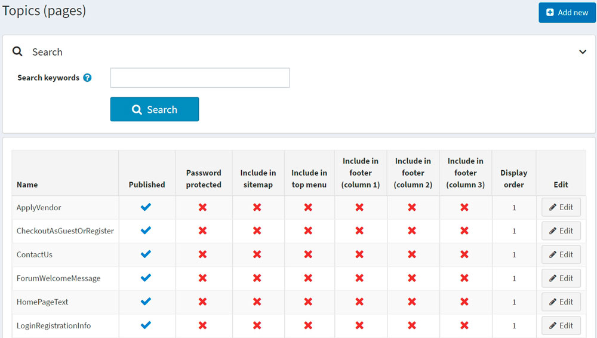
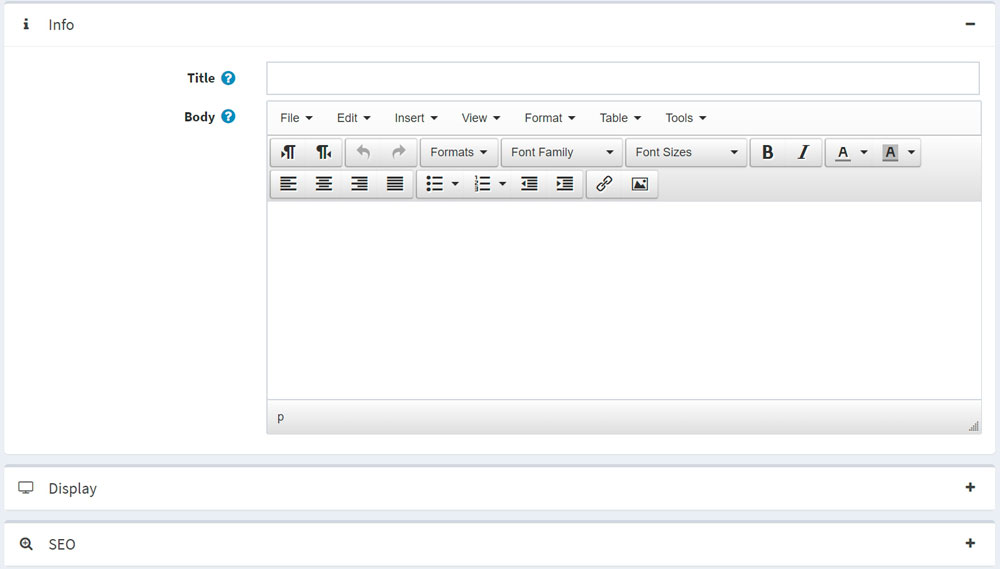

內容頁面 (Topics)
內容頁面 (Topics) 是可以顯示在您的網站上的自由格式內容區塊，可以嵌入到其他頁面中，也可以作為獨立的頁面顯示。這些內容頁面通常用於 FAQ 頁面、政策頁面、特別說明等。若要建立自訂頁面，您應該建立一個新的內容頁面，並在內容頁面詳細資料頁面輸入您的自訂頁面內容。內容可以針對每一種語言分別撰寫。
內容頁面列表
若要檢視內容頁面，請前往 內容管理 → 內容頁面 (Topics)。 您可以透過在 搜尋關鍵字 欄位中輸入內容文字或其片段，或篩選特定商店的所有內容頁面，來搜尋內容頁面列表。

新增內容頁面
若要新增內容頁面（Topic），請前往 內容管理 → 內容頁面 (Topics)。 點擊 新增 並填寫該新內容頁面的相關資訊。

資訊
在 資訊 面板中，定義下列內容頁面細節：
- 輸入該內容頁面的 標題 (Title)。
- 使用 內文 (Body) 欄位中提供的編輯器來新增內容頁面內容。
- URL 欄位僅供參考。它是該內容頁面在前台商店中的 URL。您可以透過編輯下方的 搜尋引擎友善頁面名稱 (Search engine friendly page name) 欄位來進行修改。
顯示
在 顯示 (Display) 面板中，定義下列內容頁面細節：
勾選 已發佈 (Published) 核取方塊以發佈此內容頁面。
您可以將此內容頁面包含在 頂端選單 (top menu)、頁尾 (第一欄) (footer (column 1))、頁尾 (第二欄) (footer (column 2))、頁尾 (第三欄) (footer (column 3)) 以及 網站地圖 (sitemap) 中。只需勾選對應的核取方塊即可。
如果此內容頁面受密碼保護，請勾選 受密碼保護 (Password protected) 核取方塊。密碼 (Password) 欄位將會顯示在公開商店的內容頁面中。顧客需要輸入密碼才能存取此內容頁面的內容。
從 顧客角色 (Customer roles) 下拉式清單中，選擇可以存取此內容頁面的一個或多個顧客角色。
Note
為了使用此功能，您必須停用下列設定：設定 → 目錄設定 (Catalog settings) → 忽略 ACL 規則 (全站) (Ignore ACL rules (sitewide))。閱讀更多關於存取控制清單 (ACL) 的資訊 here。
在 限制商店 (Limited to stores) 下拉式清單中，選擇要顯示此內容頁面的商店。
Note
為了使用此功能，您必須停用下列設定：目錄設定 (Catalog settings) → 忽略「依商店限制」規則 (全站) (Ignore "limit per store" rules (sitewide))。閱讀更多關於多商店功能的資訊 here。
使用 商店關閉時可存取 (Accessible when store closed) 欄位，讓此內容頁面在商店關閉時仍可存取。
選擇內容頁面的 顯示順序 (Display order)。例如，1 代表清單中的第一個項目。
輸入此內容頁面的 系統名稱 (System name)。
Note
對不同的內容頁面使用相同的系統名稱是可行的。例如，您可以建立兩個系統名稱相同但可存取角色不同的內容頁面。例如，分別設定給 訪客 (Guest) 和 已註冊 (Registered) 顧客角色。這意味著訪客和已註冊顧客將在網站上看到不同的內容。
Note
在編輯現有的內容頁面時，或在為新頁面點擊 儲存並繼續編輯 (Save and continue edit) 按鈕後，您可以點擊 預覽 (Preview) 按鈕，查看內容頁面在網站上的呈現效果。
SEO
在 SEO 面板中，定義下列內容頁面細節：
在 Search engine friendly page name 欄位中，輸入搜尋引擎所使用的頁面名稱。如果您沒有輸入任何內容，網頁 URL 將會使用頁面名稱來組成。如果您輸入 custom-seo-page-name，則會使用下列 URL：
http://www.yourStore.com/custom-seo-page-name。在 Meta title 欄位中，輸入所需的標題。標題標籤 (title tag) 會指定網頁的標題。這是一段插入網頁標頭的程式碼，格式如下：
<head> <title> Creating Title Tags for Search Engine Optimization & Web Usability <title> </head>輸入所需的類別 Meta keywords，這代表您頁面中最重要主題的簡短列表。Meta keywords 標籤格式如下：
<meta name="keywords" content="keywords, keyword, keyword phrase, etc.">在 Meta description 欄位中，輸入類別的描述。Meta description 標籤是您頁面內容的簡短摘要。Meta description 標籤格式如下：
<meta name="description" content="Brief description of the contents of your page.">
點擊 Save。該內容頁面將會顯示在前台商店中。